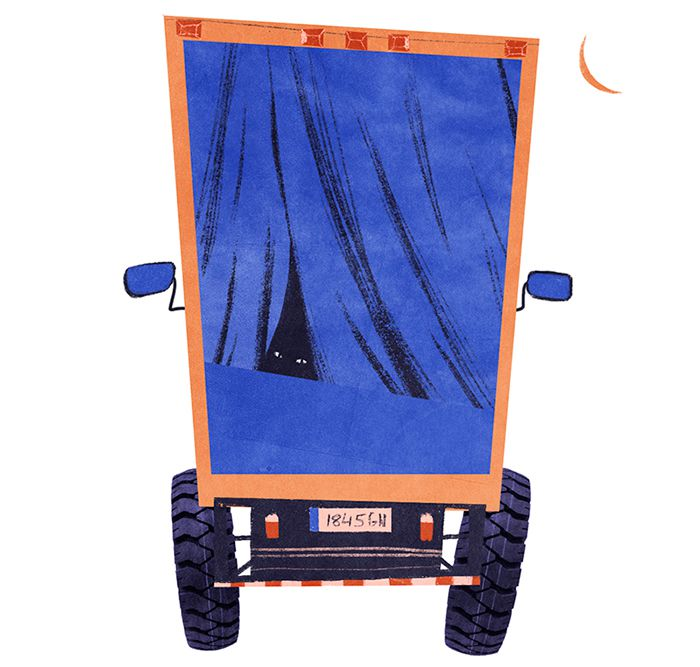
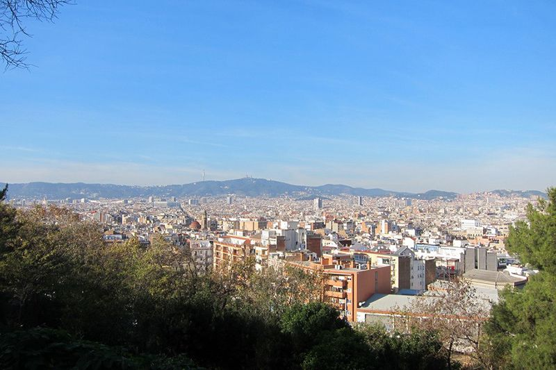
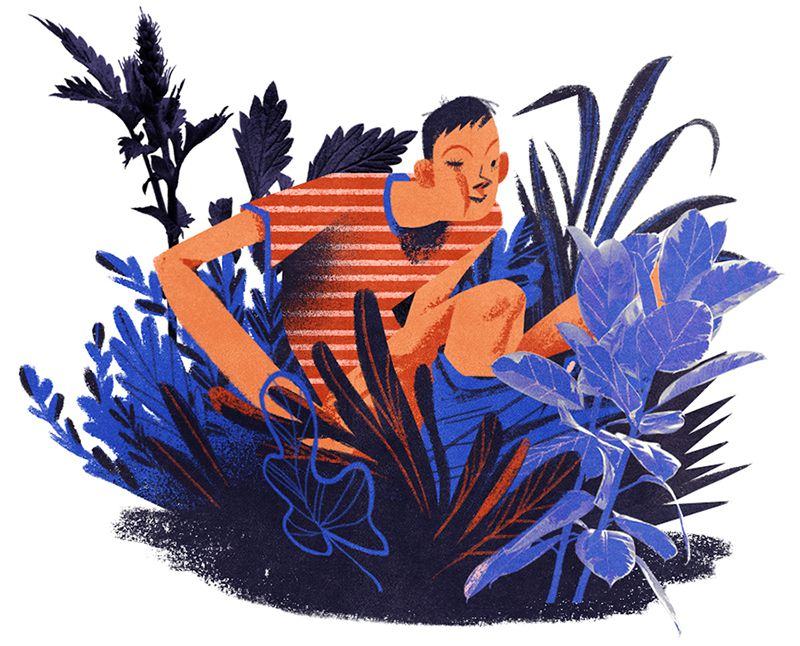
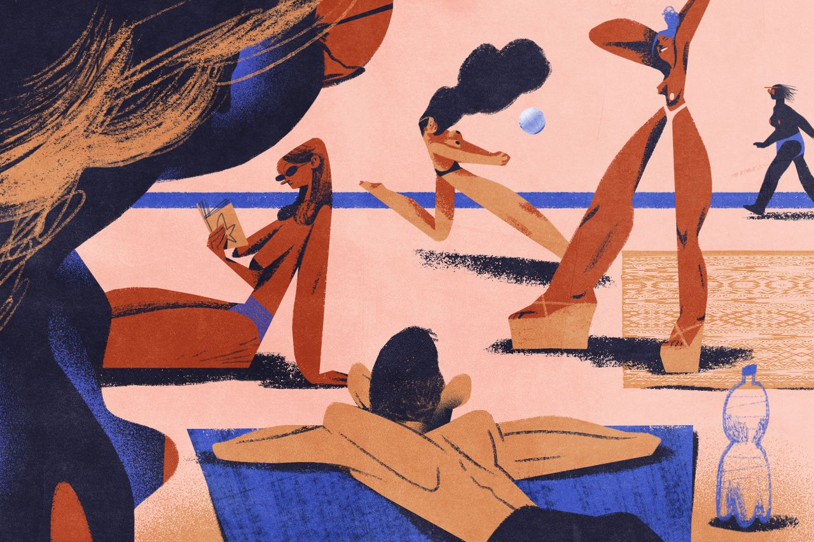
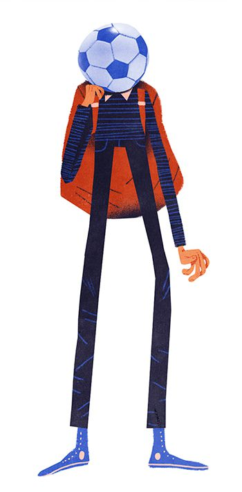
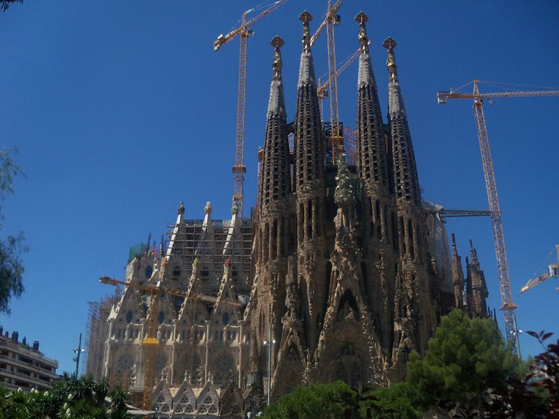
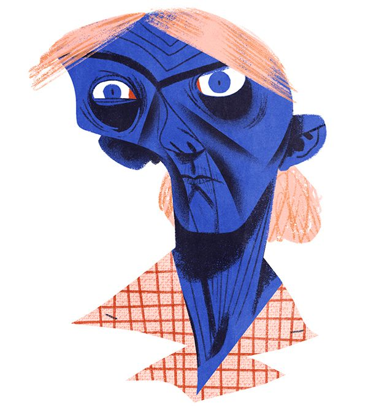
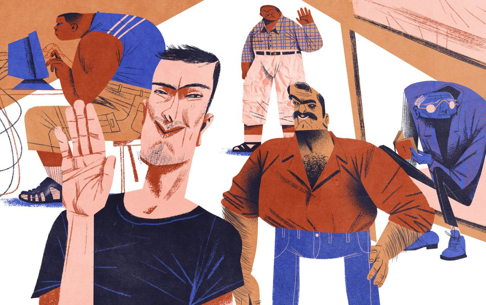

Illustration: Maria Shishova
Illustration: Maria Shishova
Как привыкнуть к жизни в городском парке, найти первых друзей в Испании и научиться добывать интернет из воздуха? В новой главе герои победили голод, чуть не попали в полицию и «обрели веру».
— Ну что, сына, устроился твой папочка!
— Сколько
обещают?
— Тридцать евро в день пока что. Завтра
уже выходить.
— А что за работа, где?
— В каком-то
дачном посёлке за городом дом строить. Как я понял,
не с нуля, а только пристройку забацать. Этому
пацану, Коле, с которым я буду работать, двадцать лет
всего-то. Хороший парень. Ему шестьдесят платят, а мне как
помощнику — тридцать. Говорит, работы там примерно
на месяц. И зарплата раз в неделю.
— А всю
неделю мы жить на что будем?
— Разберёмся. Займу
у Коли завтра, в конце концов.
— А если
не займёт?..
— Сука, я тебе точно сейчас заряжу.
Закрой рот! Пошли в парк спать.
Мы зашли в Locutorio и забрали из подвала свои походные одеяла. Парк находился неподалёку, на горе Монжуик — достопримечательности города.
По высоте эта гора была чуть выше наших терриконов, однако она сильно растягивалась в длину. Одну из сторон Монжуик омывало Средиземное море. На первый взгляд вся гора представляла из себя большой парк.
Мы брели с отцом в поисках укромного уголка. Такого, где ночью не будет никого, кроме нас.
Со стороны моря дул прохладный ветер. Мы дошли до деревянных лавок, расположенных в относительно уютном месте, если можно так сказать про лавки для ночёвки.
Расстелили одеяла и легли. Неудобно. Холодно. Покрутились с полчаса.
— Так не годится. Бери одеяло, пойдём.
— Куда?
— Пошли,
увидишь. Есть одна идейка.

Illustration: Maria Shishova
Через пять минут мы остановились возле одного
из небольших грузовиков, припаркованных вдоль высоких
пышных кустов.
В Донецке такую машину можно было бы обозначить как «грузовое такси».
Отец обошёл машину сзади, приподнял тяжёлую резиновую занавеску, закрывающую багажный отсек, просунул голову внутрь и сказал:
— Вот тут мы и уляжемся.
— Па,
ты серьёзно?
— Серьёзно. Здесь, видать, водилы
на ночь машины ставят, чтобы за парковку
не платить. Здесь парковаться нельзя, но полицейские
по ночам вряд ли по парку ходят. Тут пусто. Давай
залазь.
Глаза у отца горели — настроен он был решительно.
Я струсил. Спать без разрешения в чужом грузовике? А вдруг водитель придёт ночью? А вдруг кто-то увидит?
— Может, давай лучше на лавке поспим…
— Залазь,
говорю, быстрее, пока никто не увидел. Выспимся хоть
нормально. Мне на работу завтра вставать в шесть утра.
Не то чтобы в грузовике было тепло, но стены защищали нас от морского ветра.
Мы расстелили свои одеяла, стараясь производить как можно меньше шума. Я затаил дыхание, боясь издать хоть один звук. Мне казалось, что должно случится что-то ужасное. Отец же не подавал никаких признаков волнения. Он сладко зевнул и пожелал мне крепких снов. Я испугался:
— Па, да не ори ты так…
— Успокойся
сына, всё будет пинти-понти.
— Ладно,
ты будильник поставил?
— Поставил. Завтра день
ещё перетрёшься где-нибудь, а потом я тебя буду
с собой на работу брать, чтоб ты тут
не маялся.
— Можно подумать, там очень весело
будет…
— Если ты будешь целыми днями скулить,
то везде будет невесело, — парировал отец, но без
злобы. — Всё, короче, спим.
Я по привычке поворочался некоторое время, затем наконец нашёл удобное для сна положение и успокоился. Всё поплыло, и я потихоньку начал уходить в сон.
Затем на секунду вспомнил о том, что мы без спросу залезли в багажник чужого грузовика, и снова завертелся.
— Чё ты елозишь там?
— Страшно.
— Некогда
бояться, спать нужно.
В шесть утра зазвонил будильник. Мы молча свернули одеяла, взяли их под мышки и вылезли из бесплатной ночлежки.
Свежий воздух наполнил наши лёгкие. Мы потянулись. Посмотрев несколько минут с высоты горы на утреннюю Барселону, я почувствовал, что мне хочется в туалет.
— Па, я срать хочу, бумаги у нас нет?
— Нет.
Ну, листиками вытрись. Иди в кусты, сейчас стесняться
некого.
Я пролез между кустов, спустил штаны и сел делать дело, повернувшись спиной к равнине. Моя задница наслаждалась чудесным видом на старый средиземноморский город.

Оторвав от куста большой зелёный лист, я понял, что его поверхность больше подходит для полировки туфель.
Я в панике начал поиски бумаги, передвигаясь буквой «Г» между кустами.
— Ты долго там ещё?
— Этими кустами жопу
не вытрешь. Щас, бумажку найду какую-нибудь, подожди
минуту.
Мои ноги начали отекать. Я тихо ругался себе под нос, проклиная весь свет.
— А ты знаешь, что ночью нас чуть полицаи
не засекли?
— В смысле?
— Ты спал
как убитый, ничего не услышал. Где-то через час после того
как мы залезли, я проснулся — кто-то возле нас
по рации говорил. Пару минут он что-то там бубнил,
потом приподнял этот брезент сантиметров на десять
и начал светить под него фонарём.
Тут отец начал хохотать. Мне же было не до смеха. Проблема бумаги так и не разрешалась, я уже чуть ли не плакал от отчаяния.

Illustration: Maria Shishova
Ты слышишь?
— Да слышу. Бумагу, блин,
найти не могу.
— Начинает он, короче, светить
фонарём внутрь. Но не вперёд, на нас,
а вверх, так что нас ни хрена не видно.
Это ж надо было додуматься вверх светить, он там
летучих мышей хотел найти, что ли? — отца распирало
от смеха. — Расскажем кому — так
не поверят.
— Та да.
— Повезло
нам, короче, капитально. Мне интересно: кто этих полицаев
вызвал — здесь же никого вчера ночью не было.
Интересная история.
Но я отвлёкся, потому что меня, наконец, посетила госпожа удача: я нашёл салфетку.
И неважно, что чистой она была только с одной стороны.
Я был счастлив.
С одеялами в руках мы вернулись к Locutorio, где оставляли наши сумки накануне. Город ещё спал, но интернет-клуб работал круглосуточно.
Сонный пакистанец провёл отца в подвал, тот вернулся без одеял, но с моими плавками, которые он молча сунул мне в рюкзак.
— Всё, я погнал, а ты дуй на пляж,
поплавай. Там красота. Я вернусь не раньше восьми,
встретимся здесь же, — он протянул мне уже
успевшую потрепаться карту Барселоны с помеченной точкой
сбора и несколько евро на еду, — больше
не дам, надо растягивать. Позавтракаешь в той церкви,
где мы вчера были, она в двух шагах.
— Я туда
больше не пойду.
— Ходи голодный, значит. Всё.
Будь мужчиной.
Он поцеловал меня в макушку и отправился в сторону метро.
Я доел вчерашний багет вприкуску с огурцом, купил двухлитровую бутылку минералки и лениво побрел к морю, будто малолетний турист, уставший от скучных разговоров родителей.
Пляж в это раннее время практически пустовал. Я скинул верхнюю одежду, надел плавки, расстелил на песке потрепанное тёмно-коричневое покрывало и ненадолго вздремнул. А когда пришёл в себя и осмотрелся, то меня ждал сюрприз: женская мода этих широт категорически отрицала ношение верхней части купальников. Я перевернулся на живот, чтобы никто не заметил той части тела, куда прилила вся моя девственная кровь.
Впервые за несколько недель я отвлёкся от своих мрачных мыслей. Мне захотелось позвонить всем одноклассникам и рассказать, в каком удивительном месте я очутился.
Я лежал на животе и разглядывал женщин исподлобья. Почти все они вызывали у меня искренний восторг. Мне было неловко, и я переживал, чтобы мне не сделали замечания, потому что остальные мужчины вели себя вполне естественно.

Illustration: Maria ShishovaСпустя несколько часов жадного приобщения к прекрасному моя спина начала закипать от жара средиземноморского солнца. Мне рекомендовалось немедленно переместиться в воду.
Кое-как усмирив очевидный индикатор возбуждения, я решительно направился к морю, периодически озираясь на своё барахло. Мне было тревожно от мысли, что кто-то может украсть рюкзак с минералкой и мелочью.
Я яростно проплыл до буйка и обратно, словно пытаясь показать всем этим бесстыжим женщинам, кто здесь главный альфа-пловец. Вдруг мне в голову прилетел огромный пляжный мяч. Я обернулся: в десяти метрах, по пояс в воде, стояла обнажённая ослепительно красивая блондинка и радостно призывала меня поиграть с ней в водный волейбол. Я бросил ей мяч обратно и ретировался.
Шли дни. Отец работал, мы ночевали в парке, я бродил по пакистанскому району, читал взятую из Донецка книгу Ильфа и Петрова, и размышлял о загробной жизни. Голод победил мою брезгливость, поэтому я завтракал в церкви с бомжами, беззубыми стариками и мрачными монашками.
Тем вечером отец вернулся в приподнятом настроении
и потянул меня куда-то по узким средневековым
улочкам.
— Сына, сегодня мы поспим
по-человечески, я занял немного деньжат у напарника.
Поднявшись на пятый этаж старинного здания с помощью лифта, мы позвонили в дверь. Нас встретила пожилая русская пара. Они провели нас в комнату и любезно предложили чаю с печеньем. Чистая кровать с ослепительно белым постельным бельём привела меня в такой восторг, что я забыл обо всех приличиях и спросил, можно ли мне сперва принять ванну. Отец поддержал мой порыв, забрав чайную церемонию на себя.
Тщательно смыв под горячим душем всю память о последних неделях, я переместился в постель, укутался в одеяло и моментально уснул с блаженной улыбкой на лице, даже не успев додумать мысль о том, как мало нужно человеку для счастья.
На следующий день у отца был выходной, мы сходили в церковь и на пляж вместе, а потом направились в отделение Красного Креста, где нам обещали гуманитарную помощь. Это было небольшое помещение, забитое коробками с едой.
Нам выдали два пакета с хлебом, консервированными сосисками, консервированными ананасами, соком и бисквитами. Джекпот! За следующими «тормозками» мы могли вернуться через неделю.
Дойдя до ближайшего сквера, мы накинулись на еду, как золотоискатели из рассказов Джека Лондона, впервые за несколько недель засвежевавшие в лесу оленя.
Отец, решив, что проблема с пропитанием окончательно
разрешена, отложил из оставшихся грошей деньги
на проезд и купил себе маленькую бутылку джина. Меня
переполнял праведный гнев, но отцовская защита была
железобетонной:
— Не будь святее Папы
Римского, — сказал он назидательно и жадно
приложился к горлышку.
Наконец я нашёл способ, как убивать скуку, не имея в кармане ни сантима.
Все Locutorio в Барселоне работали по единому принципу: ты оплачиваешь необходимое время, администратор печатает чек с уникальным кодом, после чего ты вводишь этот код на любом из свободных компьютеров и занимаешься своими интернет-делами. Если ты справляешься раньше оплаченного времени, то просто нажимаешь на значок «Stop» в углу экрана — и, введя этот же код в следующий раз, можешь использовать оставшиеся минуты.
Но мало кто забирал чеки с неиспользованными минутами с собой : они просто валялись грудами вокруг мониторов, поэтому я скитался по разным Locutorio и собирал чужие коды, как киберпанк-падальщик, в надежде получить бесплатный доступ к интернету.
Чаще всего мне попадались полностью использованные чеки или жалкие минуты, но иногда могло подвернуться и до получаса дармового удовольствия. Такие щедрые подарки судьбы встречались преимущественно в хорошо обставленных корейских интернет-клубах, откуда меня быстро прогоняли строгие, как прапорщики, администраторы.
Пакистанцы отличались более мягким нравом и относились к моей сомнительной деятельности без лишних эмоций.
Введение паролей с чужих чеков было похоже на игровой автомат: после каждого нажатия на «Enter» моё сердце замирало в надежде на призовые минуты.
Однажды сидящий за соседним компьютером парень обратился
ко мне на русском:
— Привет, я Дима. Давай в контру сыграем?
— Можно,
только у меня время заканчивается.
— Продлевать
не будешь?
— Нечем.
— Так это
не проблема, — улыбнулся Дима и протянул мне
монету.
После получасовой кровавой битвы на cs_assault
мы пошли гулять по городу.
Так я познакомился со своим единственным другом в Барселоне — двадцатилетним романтиком из столицы Киргизии, приехавшим в Испанию по студенческой программе. По окончании двухнедельного обмена опытом он просто сбежал от своих кураторов, познакомился на пляже с двумя американскими туристками, прожил несколько дней в их номере, а после отъезда девушек стал таким же нелегалом, как и мы с отцом.

Illustration: Maria Shishova
Дима слегка картавил и производил впечатление
интеллигентного человека.
— Не хочу я возвращаться в Бишкек и учиться в этом сраном бизнес-колледже, — говорил он безо всякого надрыва, улыбаясь, будто просветлённый. — А ты тут чем занимаешься?
Я рассказал ему свою историю.
— Чувак, у нас вчера из приюта грузин выселили —
два места свободных теперь есть. Там, конечно, не хоромы,
но лучше, чем на лавке.
— Что
за приют?
— Частный дом какого-то старого
ёбнутого католика, недалеко от поющего фонтана. Знаешь, где
поющий фонтан?
— Нет.
— Неважно,
я покажу. Женщины живут в комнатах,
а мы с мужиками на чердаке. Там можно долго
жить, главное — каждый вечер молиться и слушать
проповеди сеньора Карлоса. Это такой пиздец! — Дима
рассмеялся. — Но зато бесплатно.
— А на чердаке
кровати есть?
— Ну, а как же. Даже туалет.
Батя когда с работы возвращается?
— Около
восьми.
— Это плохо. Просто Карлос с восьми
до девяти читает проповеди и почти сразу уезжает,
а без его благословения вас не поселят. В любом
случае надо сначала с Аидой переговорить: по факту она
там всем заправляет. Завтра суббота, приходите днём, она должна
быть целый день в доме.
Я не стал спрашивать, кто такая Аида, просто попросил отметить место на карте.
— У отца должен быть выходной, давай мы придём…
Не знаю, в одиннадцать. Встретишь нас?
— Договорились.
Ближе к вечеру мы попрощались: я пошёл на место встречи с отцом, а Дима отправился на молитву к сеньору Карлосу.
На следующий день мы забрали наши сумки из подвала Locutorio, тепло попрощались с пакистанцем и отправились к заветному месту на карте.
Дом располагался на возвышенности, с обратной стороны горы Монжуик, на которой мы ночевали последние несколько недель. Это было светлое двухэтажное здание с винтовой лестницей, ведущей на чердак, и железным серым забором, ограждающим внутренний двор от узкой проезжей части.
Дима ждал нас у входа, мечтательно покуривая сигарету.
— Это — Дима.
— Сергей.
— Очень
приятно.
Отец с воодушевлением пожал руку новому знакомому.
— Вы сумки пока лучше под лестницей оставьте… Если вас
поселят, то всё равно их наверх потом закидывать.
— Добро.
— Давайте
я вас немного проинструктирую.
Мы отошли на сто метров от дома.
— По факту здесь всем заправляет Аида. У неё
проблемы с головой, она любит только тех, кто перед ней
на коленях ползает. Я с ней тоже не особо
контачу, но вы постарайтесь, хотя бы поначалу.
— Мы постараемся, —
с лукавым прищуром ответил отец.

Я сомневался в искренности отца, потому что хорошо знал его гордый характер: он скорей останется без штанов, чем сыграет в послушного перед хамоватым начальством.
Мы зашли во двор и присели за круглый пластиковый столик в тени какого-то неведомого мне дерева. С террасы открывался впечатляющий вид на Барселону: всё как на ладони. Впереди, на другом конце города, возвышалась гора Тибидабо, а перед ней, словно намокший песочный замок, красовалась la Sagrada Família, окружённая несколькими строительными кранами.
Через какое-то время к нам подошла мрачная женщина с фиолетовыми мешками под глазами.
— Добрый вечер, меня зовут Аида, я хозяйка этого
дома.
— Сергей.
— Рома.
— Дима вам
что-то рассказывал про наш уклад?
— Немного.
— Немного?
Сеньор Карлос вообще не планировал больше селить сюда
мужчин. Вы пьёте?
— По праздникам
бывает, — отец пытался раздобрить хозяйку заигрывающей
улыбкой.
— За алкоголь мы выселяем. Молитва
каждый день с восьми до девяти вечера. Молятся все без
исключения, никаких уважительных причин быть не может. Если
вы работаете и не успеваете ходить
на молитвы, то ищите себе другое жильё. С этим
понятно?
— Понятно.
— Вечером
вы помолитесь с нами и познакомитесь
с сеньором Карлосом. Если он будет не против,
я поселю вас с остальными мужчинами на чердаке
с той стороны дома.
В просторной гостиной собрались все жители этого богоугодного приюта. Мы расселись на стульях перед небольшим алтарём. Бо́льшую часть «прихожан» составляли потрёпанные жизнью женщины из всех уголков бывшего Советского Союза: украинки, русские, армянки и осетинки. Как я узнал позже, Аида занималась их трудоустройством: они работали сиделками у немощных испанских стариков.
Каждому из присутствующих был выдан молитвенник на испанском языке.
Ровно в восемь вечера пришёл хедлайнер этого концерта — сеньор Карлос: седой, но живенький мужчина за шестьдесят, в чёрных брюках и белой накрахмаленной рубашке с коротким рукавом. В руках он держал чётки.
— Buenаs tardes, — обратился он к пастве, озарив помещение голливудской улыбкой.
Затем он стал на колени перед алтарём и, преклонив голову, принялся читать молитвы на испанском. Мы с отцом обменялись ироничными взглядами, как двоечники, попавшие на лекцию к чокнутому профессору.
После каждого куплета Карлос замолкал, и прихожане хором повторяли молитву за пастырем.
Я растерянно листал молитвенник, пытаясь понять, на каком месте все остановились.

Illustration: Maria Shishova
Аида бесшумно подошла к нам сзади и указала пальцем
на текст. Мы принялись осторожно бубнить
с остальными:
— Santa María, madre de Dios, ruega por nosotros pecadores ahora y en la hora de nuestra muerte, amen.
После тридцати минут изнурительного речитатива сеньор Карлос встал, смочил горло глотком воды и начал проповедь. Аида стояла неподалёку и переводила слово Божье на русский.
Старик, безо всякого сомнения, получал удовольствие от процесса. Он смотрел одухотворённым взглядом сквозь нас, прямиком в заблудшие варварские души, и строгий католический Бог управлял его устами в этот тёплый июньский вечер.
Так я познакомился с великим жанром Абсурда, ставшим впоследствии моим любимым направлением в искусстве.
В ходе короткого знакомства сеньор Карлос благословил нас на проживание в его приюте. На чердаке площадью около двадцати квадратных метров вмещались восемь одноместных коек и маленькая уборная с унитазом, раковиной и душевой кабиной размером со школьный пенал.
На тот момент с нами соседствовали: новый друг Дима; жизнерадостный армянин Сурен — ровесник моего отца; старый, глуховатый и беззубый мексиканец Хесус, зубривший с утра до вечера Библию, а также Иван и Володя — отец и сын из Воронежской области. В одежде эта парочка придерживалась классического фасона водителей маршруток: сандалии с носками, рыбацкие бриджи с тысячами карманов, барсетки и клетчатые рубашки пастельных тонов. Отец Иван был наигранно вежливым, задавал много бестолковых вопросов и припудривал все свои высказывания панибратскими смешками. Его сынок, двадцатипятилетний детина в теле, откопал на помойках доисторический системный блок и гигантский монитор — и бо́льшую часть времени играл в «Героев Меча и Магии II» с лицом отставного офицера морской пехоты. Как оказалось позже, эти достойные мужи были на хорошем счету у Аиды и докладывали ей обо всех «нарушениях», что происходили на нашем убогом чердаке.

Illustration: Maria ShishovaЕщё одну койку занимал аргентинец Пабло, но мы видели его только спящим, потому что он сутками вкалывал на загородной фабрике и молился с нами только по выходным. Сеньор Карлос был недоволен таким пренебрежением к слову Божьему, поэтому Пабло уже был на чемоданах.
Несмотря на тесноту помещения, этот чердак стал щедрым подарком судьбы. Бесплатное жильё! Мы с отцом пошли в ближайший Locutorio, чтобы позвонить матери и поделиться с ней хорошей новостью. Она не смогла сполна разделить нашу радость, потому что её четырнадцатилетний сын теперь жил на чердаке в двух тысячах километров от дома, и она с трудом сдерживала слёзы, слыша мой голос.
Потом отец отыскал в своей потёртой телефонной книжке телефон старого товарища Гены, который уехал с семьёй из Донецка в Севилью ещё в 90-х, получил разрешение на работу и жил там, по слухам, припеваючи. Они с отцом выросли в одном дворе и проработали несколько лет на одной шахте перед развалом СССР.
Он записал наш адрес и, к радости отца, сказал, чтобы мы ждали его завтра же к обеду.